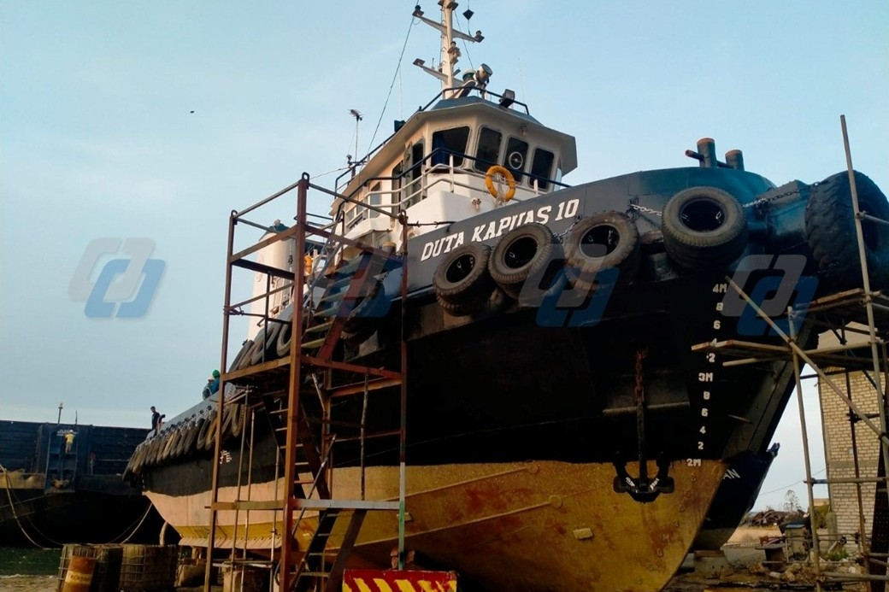
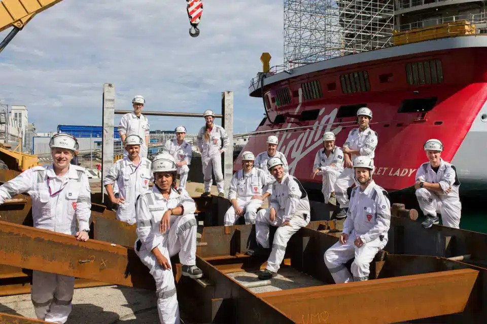
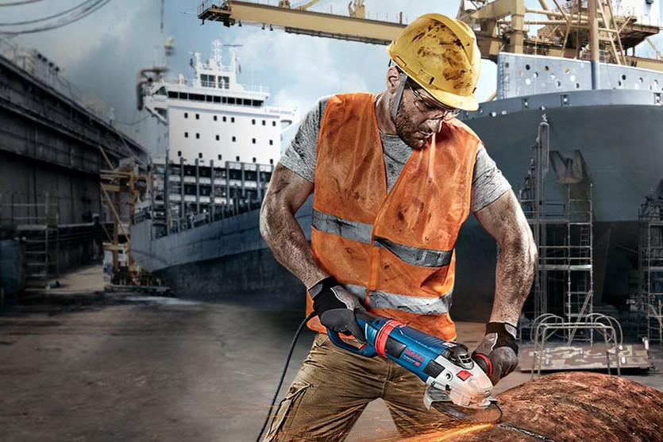

When it comes to servicing your vessel, we take care of all the details - expert marine engineers and technicians, state-of-the-art equipment and dockyards/shipyards, Genuine Marine Parts, comprehensive vessel diagnostics and condition monitoring - ensuring seaworthiness and allowing you to continue your voyage/operations.

We prioritize your voyage plans when your ship requires maintenance or repair. Our commitment includes:
Thanks to advanced condition monitoring systems integrated into many vessels, our Condition-Based Maintenance approach analyzes actual operational data and equipment health indicators to determine optimal service timing, moving beyond fixed schedules.

We seek to acquire ships already in peak condition, utilizing flexible purchasing criteria and requiring thorough pre-purchase inspections and condition surveys
Find a Retailer
Expert technicians. Cutting-edge diagnostic technologies. A comprehensive assessment of your vehicle.
Find Out More